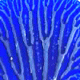
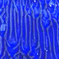
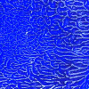
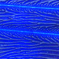

Here are some results from Tanja Geis's project "Decalcomania" from the autumn 2001 Fractal Geometry class at Yale.
The project was a collection of experiments on how several experimental parameters affect the branching pattern. Specifically,
|  |  |  |  |
| viscosity experiments | reprocessing without rotation | reprocessing with rotation | pressure experiments |
Return to Decalcomania examples.